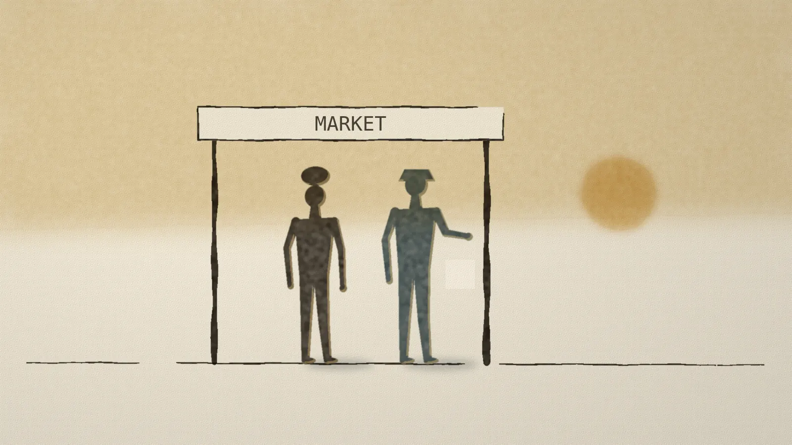

Who does what: your six leaders and your county
Lesson 6 of 8

Four charges before lunch
It’s six in the morning. Akinyi, Otieno’s wife (made up, like him), reaches the market with her tomatoes.
- She pays the market gate fee to the county askari.
- Her stall has a single business permit, renewed every year.
- The boda that brought her stock carries a county sticker, and the rider has built it into his price.
- Her brother’s pickup, unloading outside, pays a parking fee.
By eleven, Akinyi has paid the county four times. Who set those amounts? Not the President. Probably not even the Governor directly. Keep reading.
Two levels of government
Kenya has one national government and 47 county governments (Art 1(4), 6, First Schedule). Devolution exists to, among other things, give people power to govern themselves and take part in decisions that affect them, to protect minorities and marginalised communities, to bring services close to people, and to share resources fairly across Kenya (Art 174).
The Fourth Schedule of the Constitution lists who does what.
| Mostly national | Mostly county |
|---|---|
| Foreign affairs, defence, police, courts, immigration and citizenship | County health services: county clinics and hospitals, ambulances, primary health care |
| National economic policy, currency, banking, national statistics | Agriculture: crops, livestock, fisheries, vets |
| Education policy, curricula and exams; universities | Pre-primary education (ECDE), village polytechnics, home-craft centres, childcare |
| National referral hospitals; health policy | County roads, street lighting, traffic and parking, public transport |
| National public works; housing policy; energy policy | Trade: markets, trade licences, fair trading, co-operatives |
| National elections | County planning and development, including housing |
| County public works: water and sanitation services, storm water | |
| Fire fighting and disaster management; cultural activities and public amenities | |
| Making sure communities take part in local governance (item 14) |
So: no medicine at the county hospital, a broken county road, a market without toilets, a dead street light: that’s county. A national referral hospital, the police, the exam calendar, your PAYE: that’s national.
Your six leaders, one by one
1. The President (Art 129 to 155)
- Job: Head of State and Government, and head of the national executive (Art 131). Picks Cabinet Secretaries, who need the National Assembly’s approval (Art 152).
- Money power: the national budget and tax plans start in the executive; the President signs Bills, including the yearly Finance Bill, into law (Art 115).
- Limits: can’t spend money Parliament hasn’t approved, and can’t tax you without a law (Art 210).
- Term: five years, two terms at most (Art 142).
- Removal: impeachment. A third of MPs can move a motion; two-thirds of the National Assembly must pass it; then two-thirds of the Senate must uphold a charge (Art 145).
2. Your MP: Member of the National Assembly for your constituency (Art 95, 97(1)(a))
- One of 290 constituency members.
- Votes on every national tax, including the yearly Finance Bill. No tax can exist without a law (Art 210).
- Splits national money between the national government and the counties, approves national spending, and oversees how it’s used (Art 95(4)).
- Can start the removal of the President and other State officers (Art 95(5)).
- Removal: voters can recall an MP (Art 104). Lesson 7 explains.
3. Your County Woman Member of the National Assembly (Art 97(1)(b))
- 47 seats, one per county, elected by the whole county.
- Exactly the same vote as any MP on taxes, budgets and laws. On a Finance Bill, this seat counts the same as your MP’s.
4. Your Senator (Art 96, 98(1)(a))
- 47 elected senators, one per county. The Senate also has nominated members (Art 98(1)(b) to (d)).
- Protects the interests of counties (Art 96(1)) and votes on Bills concerning counties (Art 96(2)).
- Once every five years, decides the formula for sharing the counties’ money among the 47 counties (Art 217).
- Oversees national money sent to counties (Art 96(3)).
- Tries impeachments of the President (Art 145) and of Governors (County Governments Act, s.33).
5. Your Governor (Art 179 to 183)
- Head of the county executive, elected with a deputy governor on the same ticket (Art 180).
- Runs county services from the Fourth Schedule list, through the county executive committee, which also writes draft county laws (Art 183).
- Term: five years, two terms at most (Art 180(7)).
- Removal: for gross violation of the law, a serious crime, abuse of office, gross misconduct, or incapacity (Art 181). The county assembly votes first (two-thirds of all MCAs), then the Senate decides (County Governments Act, s.33).
6. Your MCA: Member of the County Assembly for your ward (Art 177, 185)
- One elected member per ward, plus nominated members so that no more than two-thirds are of one gender, and members for marginalised groups (Art 177(1)).
- The county assembly makes county laws (Art 185), including the county Finance Act that sets market fees, permits, parking and property rates (Art 209(3), (4)).
- Approves the county budget and any county borrowing. A county can’t borrow without its assembly’s approval and a national government guarantee (Art 212).
- Oversees the county executive (Art 185(3)) and can summon any person to appear before it (Art 195).
- Must debate and act on the Auditor-General’s report on the county within three months (Art 229(8)).
- Can start removing the Governor.
- Removal: voters can recall an MCA (County Governments Act, s.27). Lesson 7 explains.
Where the county’s money comes from
- Its share of national money. Counties must get at least 15% of all revenue collected by the national government, worked out from the latest audited accounts (Art 203(2), (3)).
- Its own income. Counties may charge property rates, entertainment taxes, other taxes an Act allows, and fees for services (Art 209(3), (4)).
- A limit: a county can’t tax in a way that harms trade across county borders or the free movement of goods and people (Art 209(5)). No toll walls around a county.
- Who pays leaders: the Salaries and Remuneration Commission sets the pay of all State officers (Art 230).
A real example (court order reported in the press): in May 2024, sixty traders went to the High Court saying Nyandarua County’s assembly had doubled trade licences in a new Finance Act without properly asking the public first. The court ordered licence and permit fees kept as they were while it heard the case (The Standard, 30 May 2024). That power, the right to be asked, is Lesson 7.
Who to ask about what
| What happened | Ask first | Then |
|---|---|---|
| PAYE, VAT or excise went up | MP and Woman Member (they voted) | President (proposed and signed) |
| No medicine at the county hospital | Governor | MCA (approved the budget) |
| Market fee or business permit went up | MCA (voted the county Finance Act) | Governor (proposed it) |
| Your county got a small share of national money | Senator (the formula) | MP and Woman Member (the national split) |
| The Auditor-General flagged your county and nothing happened | MCA and Senator | EACC and the courts |
| A national road or national school wasn’t built | President and national government | MP |
What you can do
- Learn which level runs the service you’re unhappy with, using the Fourth Schedule table above. Complain to the right office.
- Find your MCA, Governor and Senator’s offices. Every county assembly must hold its sittings in public (Art 196). You can sit in.
- Read your county’s budget and the Auditor-General’s report on your county. They’re public documents. You have a right to State information (Art 35).
- Ask the “who does what” questions at baraza meetings and on radio.
Where to go
| If… | Go to |
|---|---|
| A county or national office refuses information, delays, or treats you unfairly | Ombudsman (CAJ): toll free 0800 221 349 |
| You suspect public money was stolen or misused | EACC: toll free 1551, report@integrity.go.ke |
| You want to petition Parliament | parliament.go.ke (Art 119) |
Full details are in WHERE-TO-GO.md.
Quick quiz
- The county clinic has had no drugs for two months. Which two leaders do you ask?
- Who sets the market fee you pay every morning?
- Can a county borrow money if the Governor decides to?
- What’s the minimum share of national revenue counties must get?
- Does the Woman Member have the same vote as an MP on a Finance Bill?
Answers
- The Governor (runs county health) and your MCA (approved the county budget and oversees the executive).
- The county assembly (your MCAs), through the county Finance Act (Art 185, 209(4)).
- No. It needs a national government guarantee and the county assembly’s approval (Art 212).
- At least 15% of all revenue collected by the national government (Art 203(2)).
- Yes. Both are members of the National Assembly (Art 97(1)).